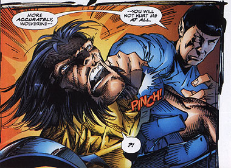
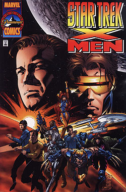
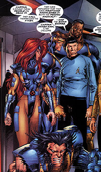
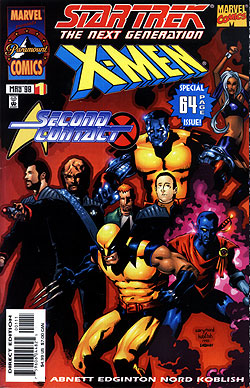
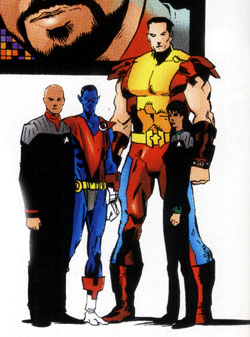

|
por Gustavo Leão
 Vou
deixar uma coisa bem clara – eu adoro crossovers. Quando
era apenas um garoto de 7 anos, na saudosa década de 70, o tesouro da minha coleção
de gibis era o primeiro crossover entre a Marvel
e a DC, o super álbum tamanho família Super-Homem Versus Homem-Aranha. Diabos,
como eu gosto dessa historia! É e sempre será uma das minhas favoritas até quando
chegar aos 80 anos (mas com corpinho de 20). E não consigo esquecer da fanfic
brasileira "TrekWars", um crossover
de Star Trek e "Star Wars" escrito
pelo talentoso Roberto Martim Kiss, fanfic para a qual
eu criei as ilustrações, desenhos dos personagens e várias cenas – bons tempos!
Bom, vamos deixar de conversa fiada e falar do que eu já li ou ando lendo, sejam
quadrinhos de qualidade duvidosa ou obras malditas como o Shatnerverso.  Foi
com bons olhos que, em 1996, fiquei sabendo que a Marvel
havia adquirido os direitos de publicação de quadrinhos de Star Trek e
iria lançar a nova linha com um crossover muito especial
– "Star Trek X-Men" !
Sim,
é verdade. Os X-Men encontraram a tripulação da Enterprise
original NCC 1701 quando a Marvel celebrou
seu aniversário de 35 anos e a Paramount os 30 anos de Jornada. Para isso,
foi criado o selo Paramount Comics e foi escolhido o
crossover "Star Trek X-Men"
como uma graphic novel de lançamento do selo. A Paramount
Comics iria publicar "Star Trek Early
Voyages" (as aventuras do Capitão Pike
antes de Kirk assumir o comando da Enterprise), "Starfleet Academy" (as
aventuras de Nog e cadetes da Academia), além de one-shots como "Mirror Universe" (uma seqüência do episódio Mirror
Mirror). Mas voltemos a "Star Trek X-Men".  Investigando
um problema próximo de Delta Vega, o planeta onde o melhor amigo de Kirk morreu
após se tornar um mutante super-poderoso, a Enterprise encontra uma nave Shi’ar
de outro universo (o universo Marvel) com problemas,
que explode depois que sete formas de vida são detectadas e teleportadas
para a Enterprise: uma equipe de X-Men
com Ciclope, Fênix, Fera, Wolverine, Tempestade, Gambit e Bispo. Uma segunda nave, então, surge com o super-ser Gladiador, que proclama Delta Vega como território
do Império Shi'ar. Escrito por Scott Lobdell e desenhado por Marc Silvestri e diversos artistas da Top
Cow comics, "Star Trek
X-Men" é divertido e cheio de tiradas brilhantes como
o Gladiador dando um soco na Enterprise (“Esse sujeito
deu um soco na minha nave”, protesta Kirk), duas equipes com dois Doutores McCoy (Bones e Fera) e Kirk cantando
Jean Grey, apenas para descobrir que ela é casada com
Ciclope. São dezenas de citações e referências para os trekkies e os marvetes, que deixam
de lado o bom senso e a lógica dos X-Men no universo
Trek e partem para a diversão pura e simples.
No
fim, Kirk, Spock e McCoy e a equipe de X-Men se teleportam para Delta Veja
para enfrentar o perigoso mutante Proteus, que se uniu
ao corpo moribumdo de Gary
Mitchel e com poderes ilimitados, jura destruir os dois
universos. Como isso acaba? Compre a revista (ainda disponível em diversos sites
americanos – mas, infelizmente, não disponível no Brasil) e descubra. Star
Trek The Next Generation
X-Men Second Contact  O
sucesso de "Star Trek X-Men" foi tamanho (e criou muita controvérsia), que
a Paramount Comics resolveu repetir a dose com "Star
Trek The Next Generation X-Men Second Contact". Desta vez,
é a vez de Jean Luc Picard e a tripulação da Enterprise-E encontrar a equipe de mutantes da Marvel. A história é uma espécie de seqüência dos eventos
do filme Primeiro Contato.
A
Enterprise-E, após resolver os problemas com os Borgs
no filme, abre uma fenda espacial para o século 24 e parte. Mas uma turbulência
na fenda joga a Enterprise no século 20 do universo
Marvel e Picard e seu grupo avançado precisam
da ajuda dos X-Men (liderados por Tempestade estão Wolverine,
Colossus, Noturno, Lince Negra, Arcanjo e Banshee)
para encontrar o caminho de casa, já que os X-Men possuem
acesso à tecnologia Shi’ar. Mas o monarca do  tempo
Kang, o Conquistador usa-a para tentar manipular a linha temporal
e conquistar o passado. Isso cria versões alternativas da batalha de Wolf 359 e do futuro sombrio dos X-Men
dominados por Sentinelas. Apesar de ser inferior a "Star Trek X-Men", ainda assim "Second
Contact" diverte, ainda mais se você é um fã de Primeiro Contato (eu, que não sou trekkie, admito que não gostei do filme). Mas
os crossovers não param por aí. A editora Pocket
Books, animada com o sucesso dos quadrinhos da Paramount Comics, lançou o livro "Planet
X", escrito pelo grande autor de Star Trek Michael J. Friedman,
em que novamente a tripulação de Picard se encontra com os X-Men.
A história, sobre o surgimento de mutantes alienígenas no planeta Xhaldia, no universo de Star Trek, é interessante,
mas nada de novo. O livro, que foi publicado no Brasil pela Meia
Sete Editora em 1998, não é péssimo, mas, se você quiser se arriscar...
bom, o problema é seu. Na
internet: Mile
High Comics, Amazon.com |